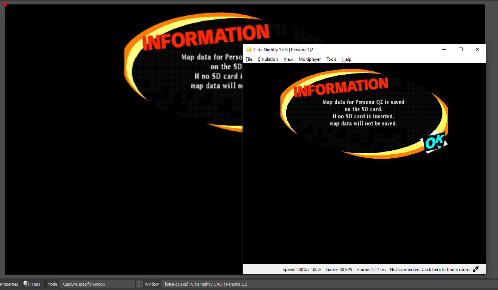

Recording 3DS Gameplay with Citra and OBS
Citra is a 3DS emulator that has seen very good development in recent years. Many games run well on Citra, and they have a higher quality image compared to the 3DS.
OBS is a very versatile piece of software that will allow you to record/stream Citra (and other stuff).
Prerequisites
Note that this is more of an advanced guide for users who are tech savvy and want the best quality possible while recording their 3DS gameplay. If you don't want to go through all the following steps or quality doesn't matter to you, check out Snickerstream
-
A 3DS with Custom Firmware
-
A computer capable of emulating and recording.
Getting Started
-
Install OBS and Citra
-
If your game hasn't been dumped yet, follow the dump guide.
- To dump DLC and Updates, look here.
-
Once your game is dumped, transfer it to your computer via SD or FTP. The dumped game will be located in
/gm9/outon your SD. -
Open Citra.
- If you have a .3DS file press
File > Load Filethen select your .3DS file. - If you have a .CIA, press
File > Install CIAthen select your .CIA file.
- If you have a .3DS file press
-
Open your game that you want to record. Keep Citra open for the next steps.
Recording
-
Open OBS
-
In the
Sourceswindow, press+to add a new source. -
Press
Game Capture, and name the source whatever you want, then press OK. -
You should get brought to a screen that says Properties for your source. Press the box next to
Modeand selectCapture specific window. -
Next to where it says window, choose `[Citra-qt.exe]: Citra (version) | game).
-
You should see your Citra window in OBS. You can resize the window by dragging it.
-
Once its set to your liking, press
Start Recordingin OBS. -
You are done!

Extras
To view your recording, in OBS press File > Show Recordings.
To transfer your 3DS save to Citra, check out this guide